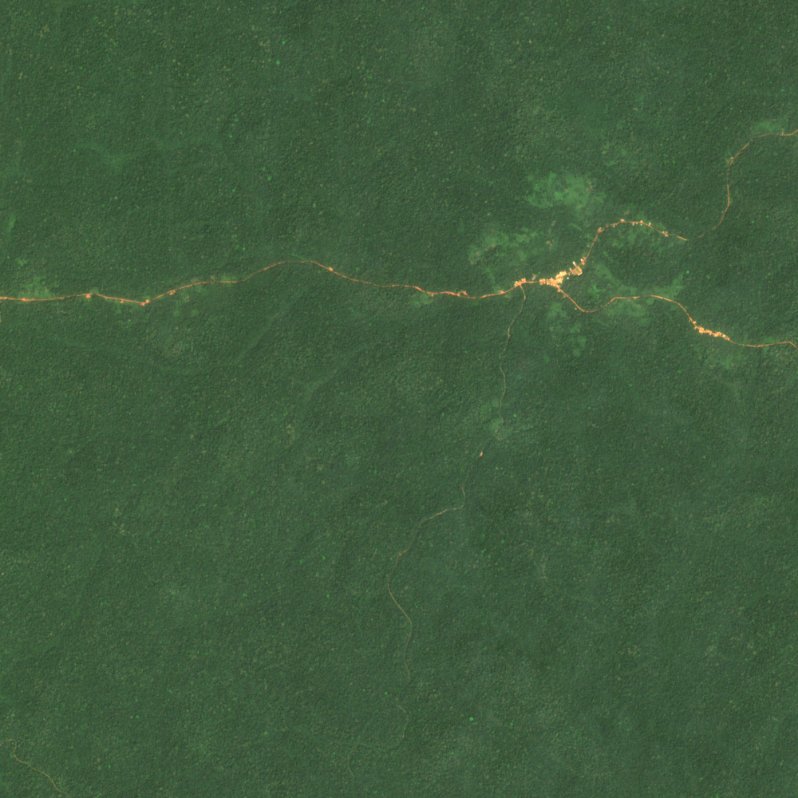
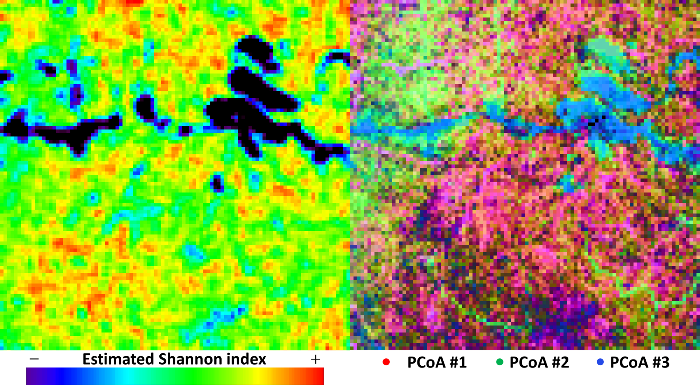
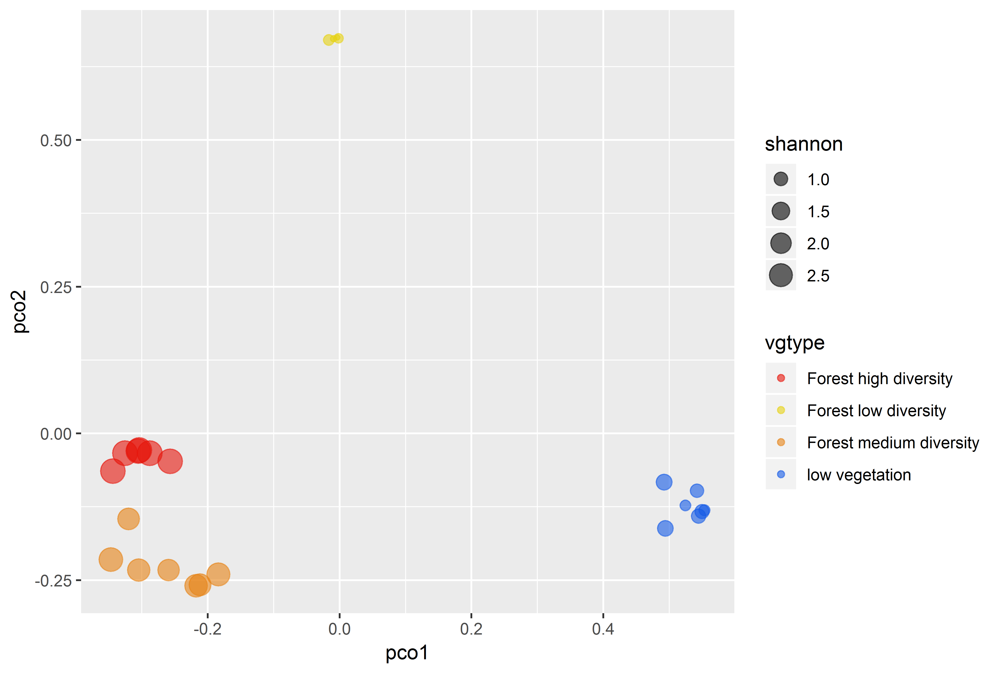
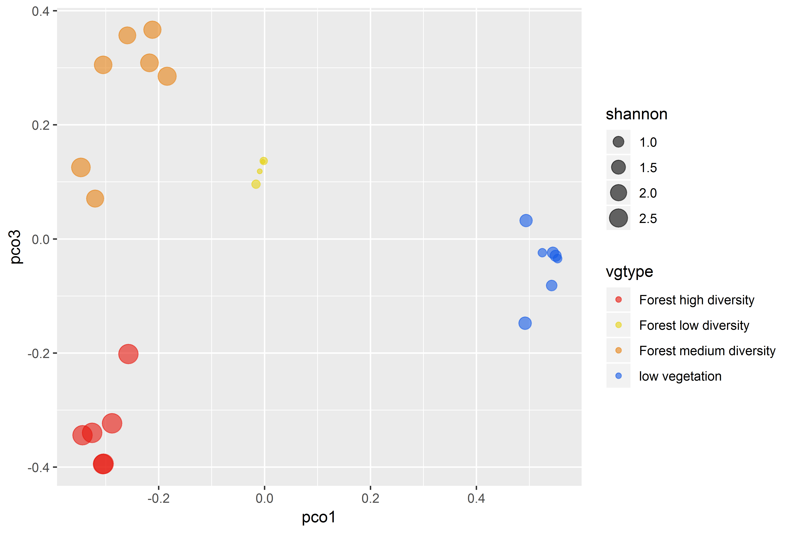
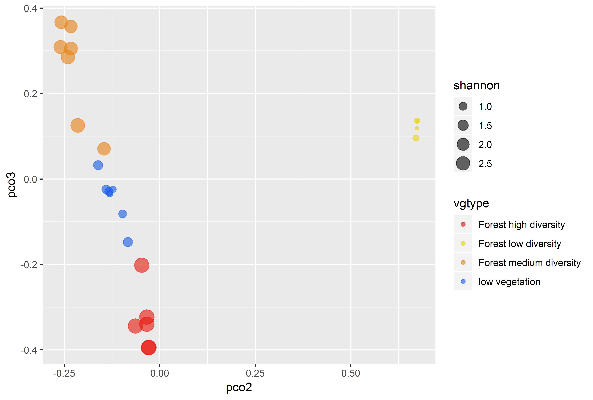

Tutorial for biodivMapR
Jean-Baptiste Féret, Florian de Boissieu
2020-11-17
Source:vignettes/biodivMapR.Rmd
biodivMapR.RmdThis tutorial aims at describing the processing workflow and providing a script aiming at producing diversity maps on a Sentinel-2 subset image acquired over the Cameroonese forest. The workflow is divided into three steps:
-
Definition of the processing parameters:
- input / output files paths
- output spatial resolution
- preprocessing and processing options
- Computation of the diversity maps. This includes several diversity metrics which can be computed independently:
- \(\alpha\) and \(\beta\) diversity maps as defined in Feret & Asner (2014) and Feret & de Boissieu (2019)
- Functional diversity maps, including Richnes, Evenness and Divergence as defined in Villeger et al. (2008)
Validation of the resulting diversity metrics if field plots measurements are available
The computation of the diversity maps is based on a certain number of prepocessing steps including: * Spectral normalization with continuum removal (relevant if woring with multi or hypersepctral images) * dimensionality reduction based on PCA, SPCA or MNF and component selection
Below is the typical flow chart of the computation of diversity maps with biodivMapR :

Define processing parameters
Input / Output files
biodivMapR uses the stars package since version 1.3.0
This means that biodivMapR now handles various input raster file formats such as tiff !!
However, you will need a ENVI style header file in order to provide spectral bands
The function raster2BIL still allows conversion into ENVI HDR format, BIL interleaved and returns updated Input_Image_File. Please use this function if you run into errors when processing your image. The error may be due to improper information in the header file.
Spectral bands should be defined if the image is multi or hyperspectral image.
A mask can also be set to work on a selected part of the input image. The mask is expected to be a raster with values 0 = masked or 1 = selected. Only one band is required. If no mask is to be used set Input_Mask_File = FALSE.
The output directory defined with Output_Dir will contain all the results. For each image processed, a subdirectory will be automatically created after its name. The output images are writted in ENVI HDR format, BIL interleaved.
library(biodivMapR) Input_Image_File <- system.file('extdata', 'RASTER', 'S2A_T33NUD_20180104_Subset', package = 'biodivMapR') Input_Mask_File <- FALSE Output_Dir <- 'RESULTS'
The image provided with the package is a subset of tile T33NUD acquired by Sentinel-2A satellite over Cameroonese rainforest in January 4th, 2018. 
Spatial resolution
The algorithm estimates \(\alpha\) and \(\beta\) diversity within individual spatial units of fixed surface, which correspond to the output spatial resolution. It is defined in number of pixels of the input image with parameter window_size, e.g. window_size = 10 meaning a window of 10x10 pixels. It will correspond to the spatial resolution of the ouput rasters.
As a rule of thumb, spatial units between 0.25 and 4 ha usually match with ground data, and are appropriate for forested ecosystems. if window_size is too small, it will result in low number of pixels per spatial unit, hence limited range of variation of diversity in the image.
In this example, the spatial resolution of the input raster is 10m x 10m. Setting window_size = 10 will result in diversity maps of spatial resolution 100m x 100m.
window_size <- 10
Computing options
The use of computing ressources can be controled with the following parameters:
-
nbCPUcontrols the parallelisation of the processing: how many CPUs will be asssigned for multithreading, -
MaxRAMcontrols the size in GB of the input image chunks processed by each thread (this does not correspond to the max amount of RAM allocated), -
nbclusterscontrols the number of clusters defined by k-means clustering for each repetition. Images showing moderate diversity (temperate forests) may need lower number of clusters (20), whereas highly diverse tropical forest require more (50). The larger the value the longer the computation time. Users are invited to experiment with different numbers of clusters in order to identify the snsitivity of divrsity patterns to this parameter.
nbCPU <- 2 MaxRAM <- 0.5 nbclusters <- 50
Computation of the diversity maps
Mask non vegetated / shaded / cloudy pixels
biodivMapR allows basic filtering based on different radiometric properties:
-
NDVI filtering allows filtering to eliminate non-vegetated pixels. Nothing fancy so you may need to deal with mixed pixels…
NDVI_Threshdefines the minimum NDVI value to be kept. By default, the NDVI is computed based on the NIR spectral band closest to 835nm, and the RED spectral band closest to 700nm. Which makes it closer to a RedEdge NDVI. These values can be adjusted as input variables forperform_radiometric_filtering. -
NIR filtering allows filtering of shadows and pixels with very low signal.
NIR_Threshdefines the minimum NIR value to be kept. By default, the NIR spectral band closest to 835nm is used. This value can be adjusted as input variables forperform_radiometric_filtering. -
BLUE filtering allows filtering of clouds, based on the hypothesis that atmospheric scattering will lead to higher reflectance in the blue domain.
Blue_Threshdefines the maximum Blue reflectance to be kept. By default, the Blue spectral band closest to 480nm is used. This value can be adjusted as input variables forperform_radiometric_filtering.
perform_radiometric_filtering provides the path for the updated shade mask as output.
NDVI_Thresh <- 0.5 # these values are relevant only if reflectance is coded as integer values between 0 and 10000. Blue_Thresh <- 500 NIR_Thresh <- 1500 print("PERFORM RADIOMETRIC FILTERING") Input_Mask_File <- perform_radiometric_filtering(Image_Path = Input_Image_File, Mask_Path = Input_Mask_File, Output_Dir = Output_Dir, TypePCA = TypePCA, NDVI_Thresh = NDVI_Thresh, Blue_Thresh = Blue_Thresh,NIR_Thresh = NIR_Thresh)
Dimensionality reduction
biodivMapR includes multiple dimensionality reduction methods, including PCA, SPCA or MNF (default value: SPCA). In case TypePCA is set to PCA or SPCA, a second filtering based on PCA outliers is possible by setting FilterPCA to TRUE.
TypePCA <- 'SPCA' FilterPCA <- TRUE
The transformation preparing for dimensionality reduction is performed on the input image, after elimination of the spectral bands corresponding to atmospheric water absorption. By default, the domains to be discarded during the process can be defined in the variable Excluded_WL, which is an input variable for the function perform_PCA. The default values are the following for the spectral domains to exclude (in nanometers):
Excluded_WL <- c(0, 400) Excluded_WL <- rbind(Excluded_WL, c(895, 1005)) Excluded_WL <- rbind(Excluded_WL, c(1180, 1480)) Excluded_WL <- rbind(Excluded_WL, c(1780, 2040))
# apply continuum removal as normalization if working with multi or hyperspectral data Continuum_Removal <- TRUE # Perform dimensionality reduction print("PERFORM DIMENSIONALITY REDUCTION") PCA_Output <- perform_PCA(Input_Image_File = Input_Image_File, Input_Mask_File = Input_Mask_File, Output_Dir = Output_Dir, TypePCA = TypePCA, FilterPCA=FilterPCA, nbCPU = nbCPU, MaxRAM = MaxRAM, Continuum_Removal = Continuum_Removal) # path of the raster resulting from dimensionality reduction PCA_Files <- PCA_Output$PCA_Files # number of pixels used for each partition used for k-means clustering Pix_Per_Partition <- PCA_Output$Pix_Per_Partition # number of partitions used for k-means clustering nb_partitions <- PCA_Output$nb_partitions # path for the updated mask Input_Mask_File <- PCA_Output$MaskPath # parameters of the PCA/MNF model PCA_model <- PCA_Output$PCA_model # definition of spectral bands to be excluded from the analysis SpectralFilter <- PCA_Output$SpectralFilter
The dimensionality reduction is performed to select the most interesting spectral information relative to spectral diversity and remove spatial noise and sensor artefacts. The resulting transformed raster (PCA, SPCA or MNF) is then stored in a binalry file in the Output_Dir directory, which in our case corresponds to RESULTS/S2A_T33NUD_20180104_Subset/SPCA/PCA/OutputPCA_8_PCs
This raster file can be displayed using QGIS or any GIS / image processing software. Here, the PCs corresponding to our image look like this:


This component selection is left to user judgement, who then writes the band to be kept in a .txt file located in the same directory as the raster file. The file is automatically created and ready to edit with function select_PCA_components. One selected band per line should be written in this file. The main goal of PC selection is to discard PCs showing no relevant information corresponding to vegetation, or including artifacts possibly explained by sensor properties. It is somehow a subjective process, and we are currently working on automatic selection of these components.
# Select components from the PCA/SPCA/MNF raster # Sel_PC = path of the file where selected components are stored Sel_PC <- select_PCA_components(Input_Image_File = Input_Image_File, Output_Dir = Output_Dir, PCA_Files = PCA_Files, TypePCA = TypePCA, File_Open = TRUE)
For this example, PCA bands 1, 2, 5, 6 and 8 can be kept if writing the following lines in file Selected_Components.txt opened for edition (do not forget carriage return after last value):
1
2
5
6
8
PC#3 and PC#7 were discarded as the main patterns observed for these components did not correspond to vegetation patterns. As a rule of thumb, between 2 and 6 selected PCs are usually sufficient to catch the main diversity patterns, but this selection strongly depends on the conditions of acquisition, the type of sensor, and the complexity of the vegetation being observed.
Functional diversity maps
The functional diversity metrics (Richness, Evenness, Divergence) can be computed directly after dimensionality reduction. Here, we assume that each selected component correspond to a trait value (each trait is scaled over the full image), and each pixel corresponds to a species/individual (no clustering is performed, so one pixel from an individual spatial unit is seen as a different species).
################################################################################ ## MAP FUNCTIONAL DIVERSITY METRICS FRic, FEve, FDiv ## ## (Villeger et al, 2008 https://doi.org/10.1890/07-1206.1) ## ################################################################################ ## read selected features from dimensionality reduction Selected_Features <- read.table(Sel_PC)[[1]] ## path for selected components map_functional_div(Original_Image_File = Input_Image_File, Functional_File = PCA_Files, Selected_Features = Selected_Features, Output_Dir = Output_Dir, window_size = window_size, nbCPU = nbCPU, MaxRAM = MaxRAM,TypePCA = TypePCA)
\(\alpha\) and \(\beta\) diversity maps
The first step towards \(\alpha\) and \(\beta\) diversity mapping corresponds to the computation of a SpectralSpecies map, which identifies the cluster (‘spectral species’) assigned to each pixel in the image, after k-means clustering is performed. Most of the input parameters are obtained when running perform_PCA.
print("MAP SPECTRAL SPECIES") map_spectral_species(Input_Image_File = Input_Image_File, Output_Dir = Output_Dir, PCA_Files = PCA_Files, PCA_model = PCA_model, SpectralFilter = SpectralFilter, Input_Mask_File = Input_Mask_File, Pix_Per_Partition = Pix_Per_Partition, nb_partitions = nb_partitions, nbCPU = nbCPU, MaxRAM = MaxRAM, nbclusters = nbclusters, TypePCA = TypePCA, Continuum_Removal = Continuum_Removal)
SpectralSpecies is then stored in a raster file located here:
RESULTS/S2A_T33NUD_20180104_Subset/SPCA/SpectralSpecies
\(\alpha\) and \(\beta\) diversity maps, as well as validation, are based on this SpectralSpecies raster.
The code to compute \(\alpha\) and \(\beta\) diversity maps from this file is as follows:
print("MAP ALPHA DIVERSITY") # Index.Alpha = c('Shannon','Simpson') Index_Alpha <- c('Shannon') map_alpha_div(Input_Image_File = Input_Image_File, Output_Dir = Output_Dir, TypePCA = TypePCA, window_size = window_size, nbCPU = nbCPU, MaxRAM = MaxRAM, Index_Alpha = Index_Alpha, nbclusters = nbclusters) print("MAP BETA DIVERSITY") map_beta_div(Input_Image_File = Input_Image_File, Output_Dir = Output_Dir, TypePCA = TypePCA, window_size = window_size, nb_partitions=nb_partitions, nbCPU = nbCPU, MaxRAM = MaxRAM, nbclusters = nbclusters)
\(\alpha\) and \(\beta\) diversity maps are then stored in raster files located here: RESULTS/S2A_T33NUD_20180104_Subset/SPCA/ALPHA and here: RESULTS/S2A_T33NUD_20180104_Subset/SPCA/BETA
Different rasters can be produced and users are invited to refer to the documentation for more options.
Here, processing our example leads to the following \(\alpha\) and \(\beta\) diversity maps

Compute diversity indices from a vector layer
The following code computes \(\alpha\) and \(\beta\) diversity from field plots and extracts the corresponding diversity indices from previouly computed SpectralSpecies raster in order to perform validation.
# location of the spectral species raster needed for validation Output_SubDir <- tools::file_path_sans_ext(basename(Input_Image_File)) Dir_Raster <- file.path(Output_Dir,Output_SubDir,TypePCA,'SpectralSpecies') Name_Raster <- 'SpectralSpecies' Path_Raster <- file.path(Dir_Raster,Name_Raster) # location of the directory where shapefiles used for validation are saved vect <- system.file('extdata', 'VECTOR', package = 'biodivMapR') Shannon_All <- list() # list vector data Path_Vector <- list_shp(vect) Name_Vector <- tools::file_path_sans_ext(basename(Path_Vector)) # get diversity indicators corresponding to shapefiles (no partitioning of spectral dibversity based on field plots so far...) Biodiv_Indicators <- diversity_from_plots(Raster_SpectralSpecies = Path_Raster, Plots = Path_Vector, NbClusters = nbclusters, Raster_Functional = PCA_Files, Selected_Features = Selected_Features) Shannon_RS <- c(Biodiv_Indicators$Shannon)[[1]] FRic <- c(Biodiv_Indicators$FunctionalDiversity$FRic) FEve <- c(Biodiv_Indicators$FunctionalDiversity$FEve) FDiv <- c(Biodiv_Indicators$FunctionalDiversity$FDiv) # if no name for plots Biodiv_Indicators$Name_Plot = seq(1,length(Biodiv_Indicators$Shannon[[1]]),by = 1)
The tables are then written to tab-seperated files.
# write RS indicators #################################################### # write indicators for alpha diversity Path_Results <- file.path(Output_Dir,Output_SubDir,TypePCA,'VALIDATION') dir.create(Path_Results, showWarnings = FALSE,recursive = TRUE) write.table(Shannon_RS, file = file.path(Path_Results,"ShannonIndex.csv"), sep="\t", dec=".", na=" ", row.names = Biodiv_Indicators$Name_Plot, col.names= F,quote=FALSE) Results <- data.frame(Name_Vector, Biodiv_Indicators$Richness, Biodiv_Indicators$Fisher, Biodiv_Indicators$Shannon, Biodiv_Indicators$Simpson, Biodiv_Indicators$FunctionalDiversity$FRic, Biodiv_Indicators$FunctionalDiversity$FEve, Biodiv_Indicators$FunctionalDiversity$FDiv) names(Results) = c("ID_Plot", "Species_Richness", "Fisher", "Shannon", "Simpson", "FRic", "FEve", "FDiv") write.table(Results, file = paste(Path_Results,"AlphaDiversity.csv",sep=''), sep="\t", dec=".", na=" ", row.names = F, col.names= T,quote=FALSE) # write indicators for beta diversity BC_mean <- Biodiv_Indicators$BCdiss colnames(BC_mean) <- rownames(BC_mean) <- Biodiv_Indicators$Name_Plot write.table(BC_mean, file = paste(Path_Results,"BrayCurtis.csv",sep=''), sep="\t", dec=".", na=" ", row.names = F, col.names= T,quote=FALSE)
These results can then be displayed according to the need for further analysis. Here, for the purpose of illustration, we provide a code in order to visualize the differences among field plots located in the image: we first perform a PCoA on the Bray Curtis dissimilarity matrix computed from the field plots:
# apply ordination using PCoA (same as done for map_beta_div) library(labdsv) MatBCdist <- as.dist(BC_mean, diag = FALSE, upper = FALSE) BetaPCO <- pco(MatBCdist, k = 3)
The plots corresponding to forested areas with high, medium and low diversity, as well as low vegetation/degraded forest close tomain roads are distributed as follows:

Here, we produce figures in order to locate the different types of vegetation in the PCoA space:
# very uglily assign vegetation type to polygons in shapefiles nbSamples = c(6,4,7,7) vg = c('Forest high diversity', 'Forest low diversity', 'Forest medium diversity', 'low vegetation') Type_Vegetation = c() for (i in 1: length(nbSamples)){ for (j in 1:nbSamples[i]){ Type_Vegetation = c(Type_Vegetation,vg[i]) } } # create data frame including alpha and beta diversity library(ggplot2) Results <- data.frame('vgtype'=Type_Vegetation,'pco1'= BetaPCO$points[,1],'pco2'= BetaPCO$points[,2],'pco3' = BetaPCO$points[,3], 'shannon'=Shannon_RS,'FRic' = FRic, 'FEve' = FEve, 'FDiv' = FDiv) # plot field data in the PCoA space, with size corresponding to shannon index ggplot(Results, aes(x=pco1, y=pco2, color=vgtype,size=shannon)) + geom_point(alpha=0.6) + scale_color_manual(values=c("#e6140a", "#e6d214", "#e68214", "#145ae6")) filename = file.path(Path_Results,'BetaDiversity_PcoA1_vs_PcoA2.png') ggsave(filename, plot = last_plot(), device = 'png', path = NULL, scale = 1, width = 6, height = 4, units = "in", dpi = 600, limitsize = TRUE) ggplot(Results, aes(x=pco1, y=pco3, color=vgtype,size=shannon)) + geom_point(alpha=0.6) + scale_color_manual(values=c("#e6140a", "#e6d214", "#e68214", "#145ae6")) filename = file.path(Path_Results,'BetaDiversity_PcoA1_vs_PcoA3.png') ggsave(filename, plot = last_plot(), device = 'png', path = NULL, scale = 1, width = 6, height = 4, units = "in", dpi = 600, limitsize = TRUE) ggplot(Results, aes(x=pco2, y=pco3, color=vgtype,size=shannon)) + geom_point(alpha=0.6) + scale_color_manual(values=c("#e6140a", "#e6d214", "#e68214", "#145ae6")) filename = file.path(Path_Results,'BetaDiversity_PcoA2_vs_PcoA3.png') ggsave(filename, plot = last_plot(), device = 'png', path = NULL, scale = 1, width = 6, height = 4, units = "in", dpi = 600, limitsize = TRUE)
The resulting figures are displayed here:
